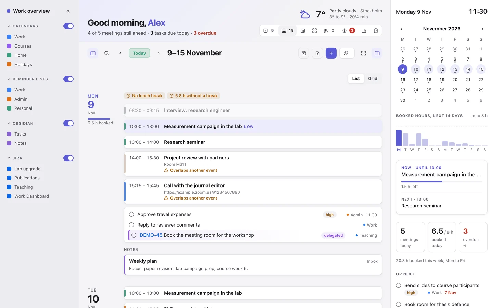
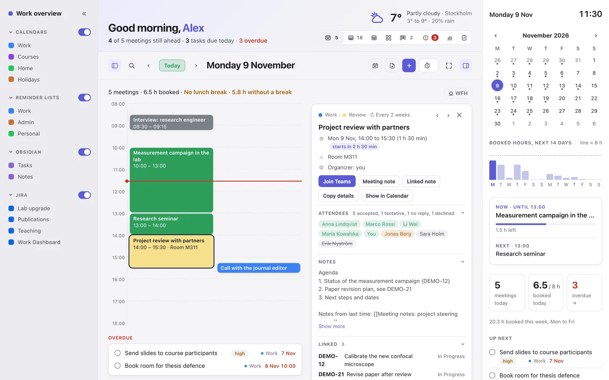
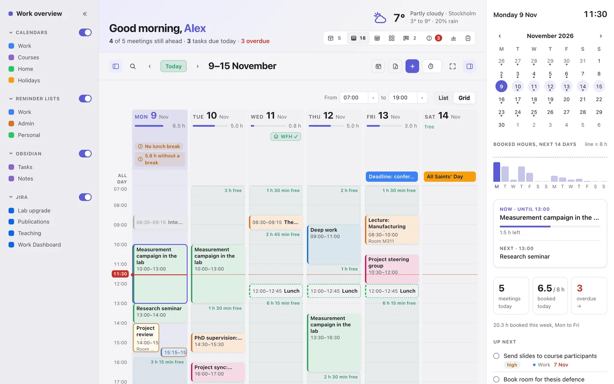
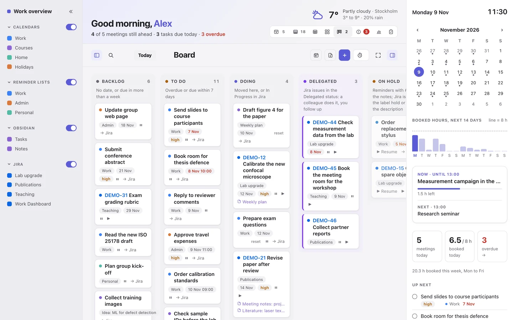
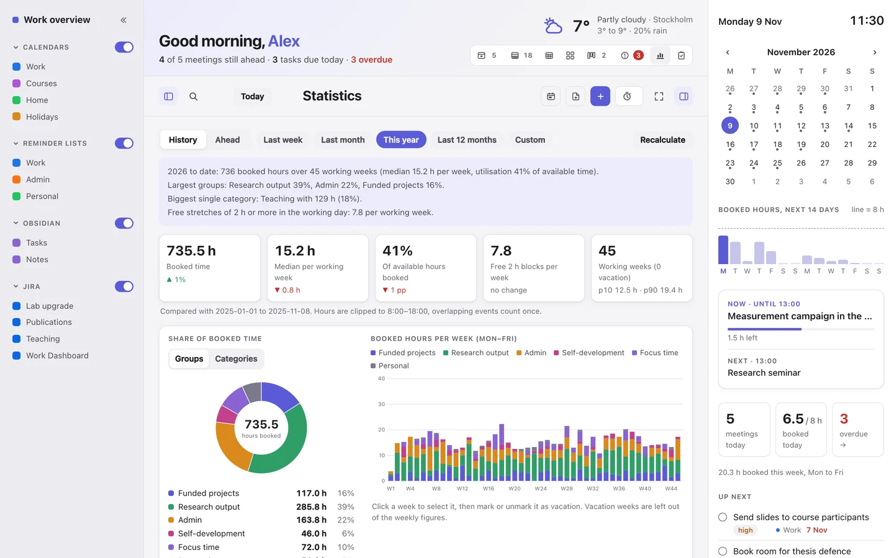
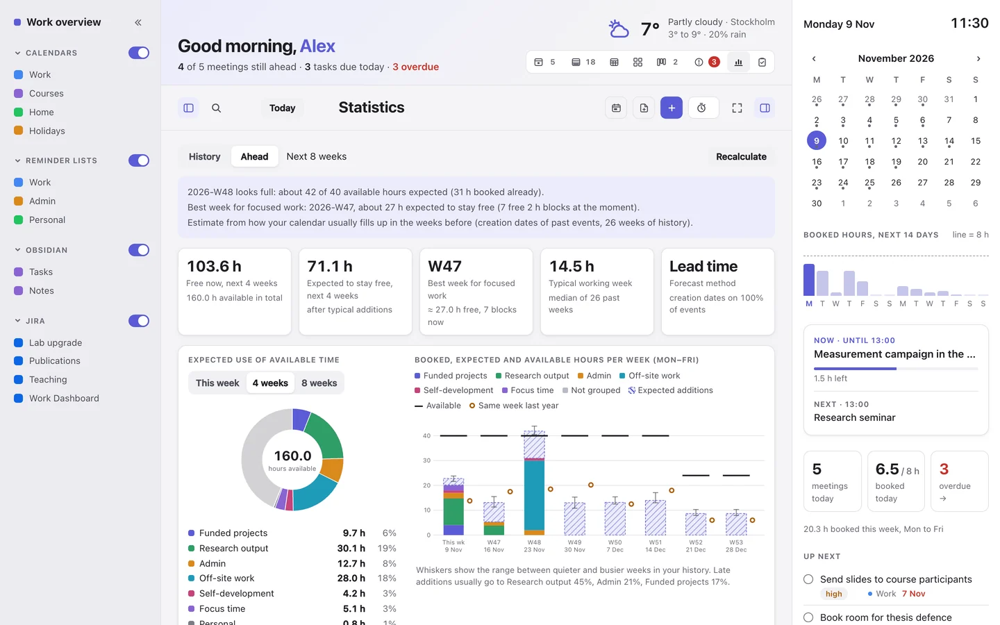
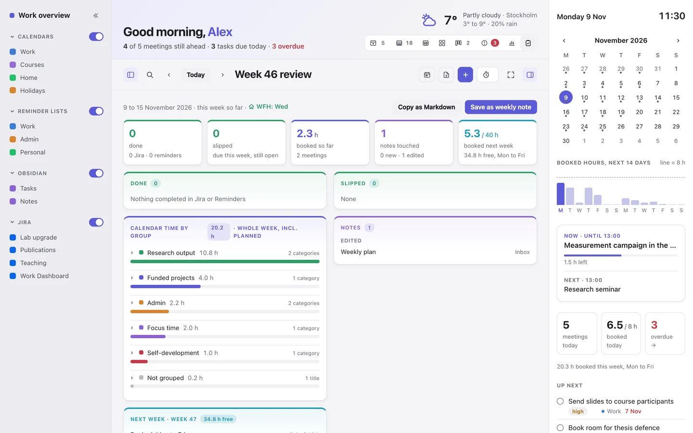
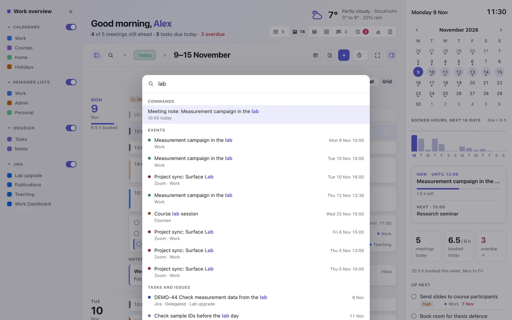
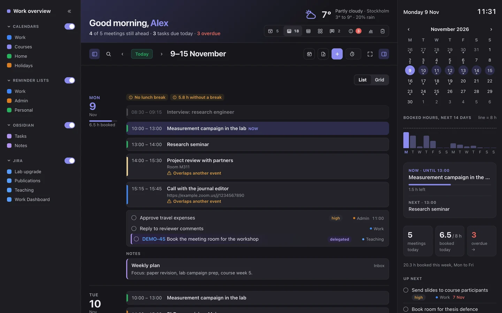

Your whole week on one page.
Work Dashboard brings your meetings, to-dos, notes and issues together in one local page on your Mac. See what is coming, where the time goes, and act on it without switching between four apps.
- Calendar
- Reminders
- Obsidian
- Jira
Free and open source (MIT). For macOS 13 or later. Runs on 127.0.0.1, on your own Mac. Works on iPhone and iPad too.

Made for weeks with too many moving parts
For researchers, teachers, engineers and managers whose day lives in a calendar, a to-do list, a notes vault and an issue tracker at once.
Everything in one agenda
Exchange and iCloud meetings, Apple Reminders, Obsidian tasks and Jira issues in Day, Week, Month and Year views, coloured by Outlook category.
Warns before it gets tight
No lunch break, back-to-back stretches, overlaps and overbooked days, plus a 30-day deadline radar from Jira, notes and calendar titles.
Where the time goes
Statistics group calendar time by your own title rules. Ahead forecasts the next 8 weeks and finds the best week for focused work.
Act from the page
Plan focus blocks, add reminders in batches, create notes and Jira issues, triage your Inbox and log focus time. Every batch has Undo.
Find anything with ⌘K
Search events, tasks, Jira issues and the full text of your notes, and run every command from the keyboard.
A weekly review that writes itself
What got done, what slipped and how next week looks, saved to Obsidian every Friday afternoon as a visual note.
A closer look
Every screenshot uses made-up demo data. Click one for the full page.














+ to capture a line into Obsidian.

Want to know what every part of the page does? Hover over the interactive anatomy, or read the full user guide with a screenshot of every feature.
Start in five minutes
- Check your MacmacOS 13 or later, with Python 3 and git from Apple's Command Line Tools.
- DownloadClone the repository from GitHub, or download the ZIP.
- Run the installer
./install.shasks which parts you use: Obsidian, Jira, Outlook, weather, iPhone and iPad. - Open itBookmark
127.0.0.1:8765, or add it to the Home Screen of your iPhone through Tailscale.
# in Terminal
git clone https://github.com/rtomkowski/work-dashboard.git ~/work-dashboard
cd ~/work-dashboard && ./install.sh
Just curious? python3 demo/serve_demo.py runs the real page with generated demo data, without touching your calendar or writing anything to disk. Step by step, with troubleshooting: INSTALL.md.
What you need
Required
- A Mac with macOS 13 (Ventura) or later
- Python 3.9+ and git (Command Line Tools)
- Apple Calendar and/or Reminders with your accounts
- Any web browser
Optional, each one can be turned off
- Obsidian: tasks, notes, capture and the weekly review
- Jira Cloud: issues, Board moves, new issues, worklogs
- Microsoft Outlook: category colours and booking with a category
- Tailscale: private access from iPhone and iPad